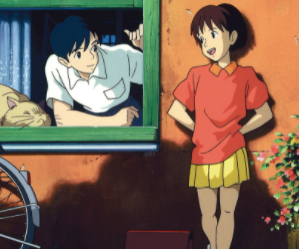

Sussurros do Coração
1995 • 1h 51min • Romance

A estudante Shizuku descobre que todos os livros que ela pega na biblioteca já foram lidos por alguém chamado Seiji. Agora, ela quer encontrá-lo.
1995 • 1h 51min • Romance
A estudante Shizuku descobre que todos os livros que ela pega na biblioteca já foram lidos por alguém chamado Seiji. Agora, ela quer encontrá-lo.